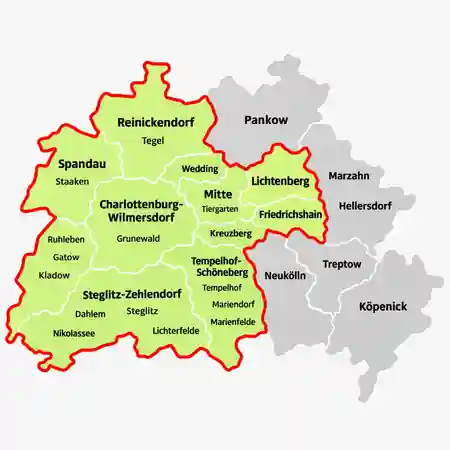

Sie brauchen Hilfe
Für sich selbst oder einen Menschen, der Ihnen nahesteht.
MALAIKA · Berlin
Brauchen Sie oder Ihre Angehörigen Unterstützung im Alltag? Bei MALAIKA erfahren Sie in Ruhe, welche Möglichkeiten für Sie bestehen.
Rufen Sie uns einfach an! Informieren Sie sich kostenlos darüber, welche Leistungen Ihre Pflegeversicherung in Ihrem persönlichen Fall im Rahmen der §§ 36 und 45b SGB XI und der verfügbaren Leistungsbeträge übernehmen kann.

Wir erklären Ihnen den Weg – verständlich und Schritt für Schritt.
Für sich selbst oder einen Menschen, der Ihnen nahesteht.
Ein Anruf genügt für die erste kostenlose Information.
Gemeinsam besprechen wir den Bedarf, Pflegegrad und mögliche Leistungen der Versicherung.
Vor Beginn besprechen wir Leistungen, Kosten und notwendige Unterlagen.
Nach Vereinbarung kommt eine Mitarbeiterin oder ein Mitarbeiter zu Ihnen nach Hause.
Unsere Dienstleistungen – übersichtlich nach Art der Unterstützung.
Alltagsbegleitung und Gesellschaft
Unterstützung im Haushalt
Hilfe bei der täglichen Versorgung
Welche Leistungen die Pflegeversicherung bezahlt, hängt vom Pflegegrad, der Art der Hilfe und dem noch verfügbaren Leistungsbetrag ab.
§ 36 SGB XI: Bei Pflegegrad 2–5 können bestimmte körperbezogene Pflegemaßnahmen, Betreuung und Hilfen bei der Haushaltsführung bis zu den gesetzlichen Höchstbeträgen übernommen werden.
§ 45b SGB XI: In der häuslichen Pflege steht unter den gesetzlichen Voraussetzungen ein zweckgebundener Entlastungsbetrag von bis zu 131 € monatlich (Stand 2026) zur Verfügung.
Für den Entlastungsbetrag gelten je nach Pflegegrad Einschränkungen, insbesondere bei körperbezogener Selbstversorgung. Nicht gedeckte Kosten können selbst zu tragen sein.
☎ Kostenlos informierenWir unterstützen Menschen zu Hause in diesen Berliner Bezirken und Ortsteilen. Ob Einsätze an Ihrer Adresse möglich sind, klären wir telefonisch.
